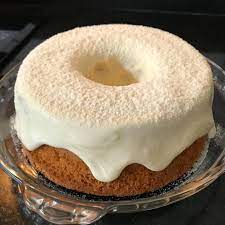

Bolo de Ninho
Massa
gema de ovo
5 gemas
açúcar
2 xícaras de açúcar
farinha de trigo
2 xícaras de farinha
leite
1 xícara de leite fervendo
fermento
1 colher (sopa) de fermento
clara de ovo
5 claras em neve
Recheio
leite condensado
1 lata de leite condensado
manteiga sem sal
200 g de manteiga sem sal
leite em pó
8 colheres de leite ninho
creme de leite
2 latas de creme de leite sem soro bem gelado
Para molhar a massa antes de rechear deixe ferver até ficar quase em ponto de fio
água
3 xícaras de água
açúcar
1 xícara de açúcar
extrato de baunilha
2 colheres (chá) de extrato de baunilha